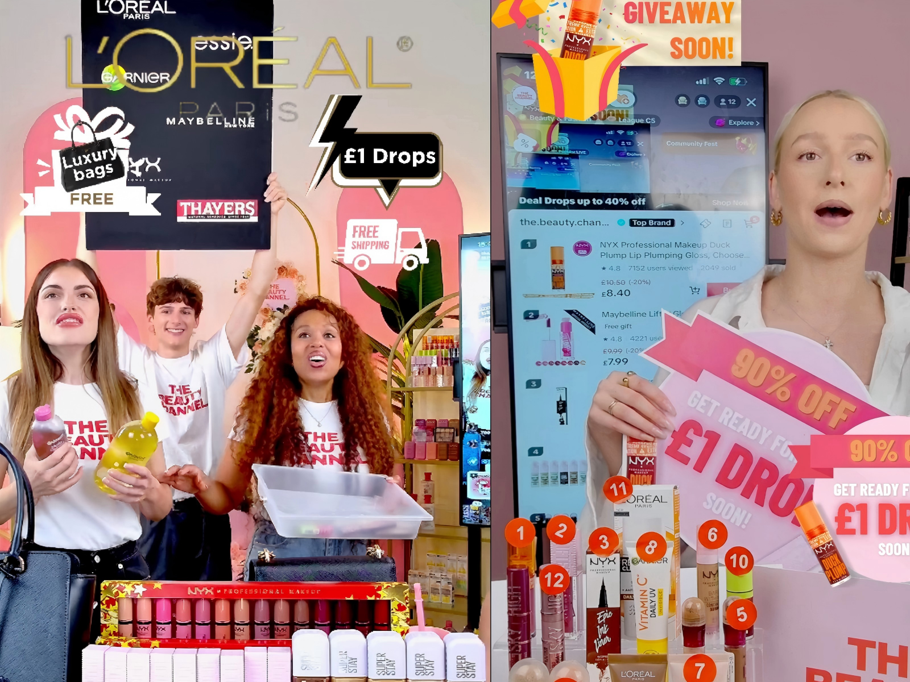
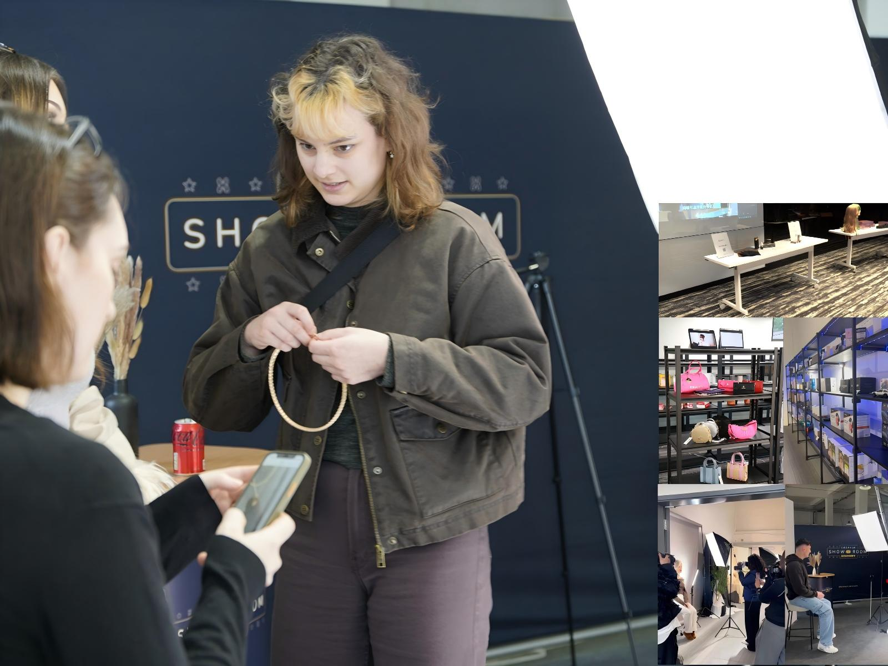
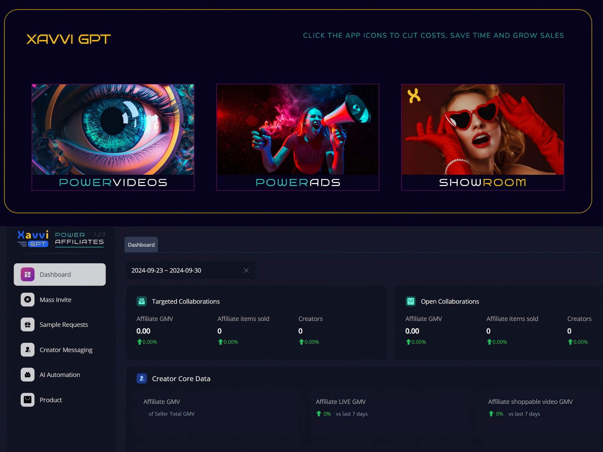
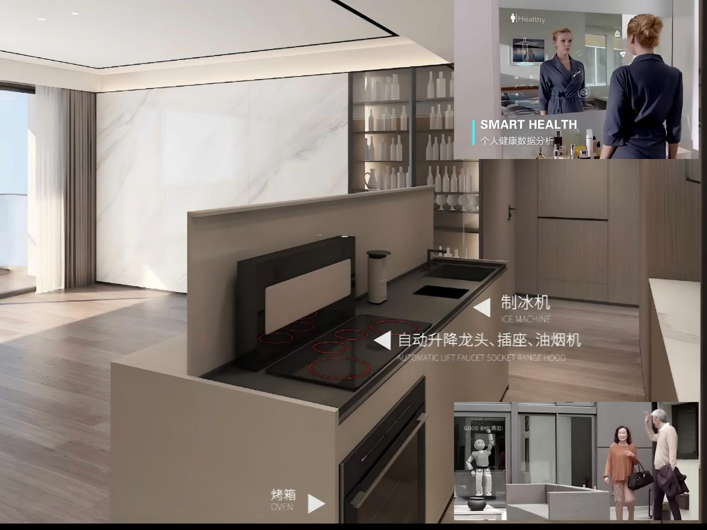

TikTok x L’Oréal LIVE Campaign
LIVE Commerce / Strategy
Supported TikTok Shop and LIVE commerce operations in collaboration with TikTok London and L’Oréal, contributing to campaign execution, livestream coordination, short-form content support, and performance optimisation that helped scale monthly sales to £230K.

Brand LIVE Campaign Operations
Brand Partnerships / Campaign Execution
Worked across 100+ partner brands and coordinated 150+ creator collaborations across TikTok, Instagram, Facebook, and YouTube, supporting partner activation, campaign delivery, traffic growth, brand visibility, and conversion-focused execution.

Showroom Experience Project
Showroom Operations / Merchant Activation
Managed UK showroom operations supporting merchant onboarding, sample and content coordination, go-to-market execution, and offline-to-online activation, while aligning brands, creators, and internal teams around commercial objectives.

Design Portfolio
Design Leadership / Commercial Projects
Led a 5-member design team and managed complex commercial projects across concept development, resource planning, stakeholder coordination, and final delivery, including an annual project portfolio worth RMB 5M and multi-project delivery with strong execution consistency.